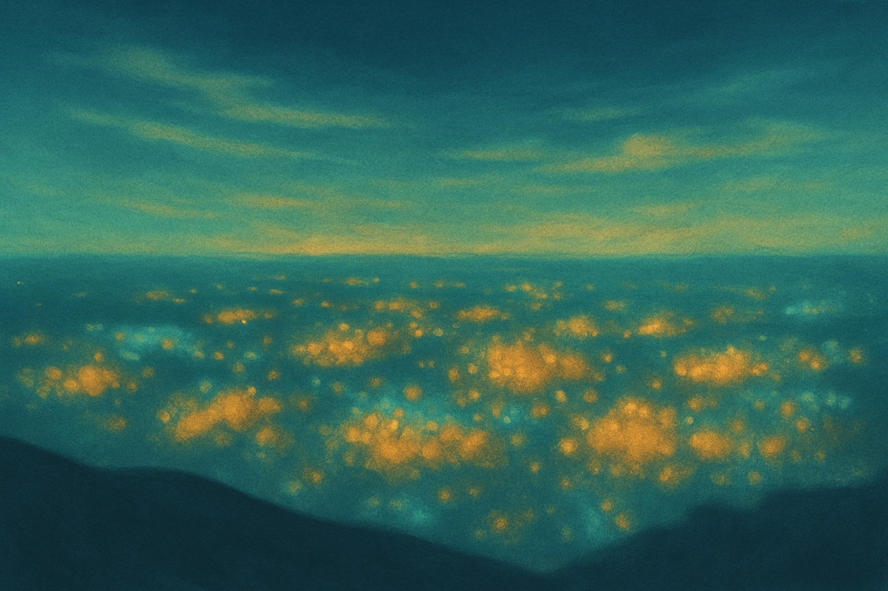

Understanding how people experience and give meaning to places, through collaborative research that supports communities in documenting their lived experiences.

Understanding how people experience and give meaning to places, through collaborative research that supports communities in documenting their lived experiences.
Traditional geographic research relies on administrative boundaries that fail to capture how people actually experience and give meaning to their places. The Platial Atlas revolutionizes this approach through exploring place instead of space.
Understanding places through the eyes of those who live, work, and find meaning there.
From villages to global cities, everywhere has platial stories to explore.
Empowering communities to document and understand their own sense of place.
Open data and methods intends to make place analysis available to all communities.
Our six-step methodology transforms diverse place data into meaningful understanding of how communities function, from market towns to rural villages, from suburban neighborhoods to megacities.
Harmonise diverse place data into meaningful categories: e.g., community spaces, commerce, culture, nature, and heritage.
Apply context-aware algorithms to identify how places naturally form based on community use and meaning.
Test cluster quality with Silhouette scores, Moran's I, and Nearest Neighbour Index.
Add environmental and cultural layers: e.g., landscapes, heritage, stories, and local knowledge.
Generate context-aware place descriptions that represent local knowledge and a dynamic understanding of places.
Create accessible maps and stories that people can use to understand and share their place experiences.
See the early stage work on the PlaceCrafter Framework in action through our web-based geospatial tool that identifies functional urban regions by clustering OpenStreetMap Points of Interest.
Explore PlaceCrafterA growing network of researchers, community partners, and institutions collaborating to advance platial geography and support place-based understanding worldwide.
Project Lead
Leading research in platial information geospatial analysis studies, fostering collaborative networks across academic and community partners worldwide.
Supporting communities and researchers worldwide in understanding their place experiences, fostering international research collaboration, and democratising geographic knowledge for sustainable development.
SDG 11: Sustainable Cities and Communities
SDG 1: No Poverty (rural development)
SDG 10: Reduced Inequalities
SDG 17: Partnerships for the Goals
SDG 4: Quality Education (research capacity)
SDG 16: Peace and Strong Institutions
Our research contributes to the growing field of platial geography through peer-reviewed publications, conference presentations, and open-source methodologies.
Authors: Williams, James and Priestnall, Gary
Conference: Proceedings of the OSMScience 2025, Manila, Philippines
Year: 2025
This paper introduces the PlaceCrafter methodology for identifying functional urban regions through the platial clustering of OpenStreetMap points of interest, moving beyond traditional administrative boundaries to capture how cities are actually experienced and used.
More publications are in development. Check back for updates on our latest research findings.
Connect with our international research network, share your place stories, and collaborate on advancing the understanding of lived experiences worldwide.
International Collaboration • Community-Centered Research • Global Partnerships